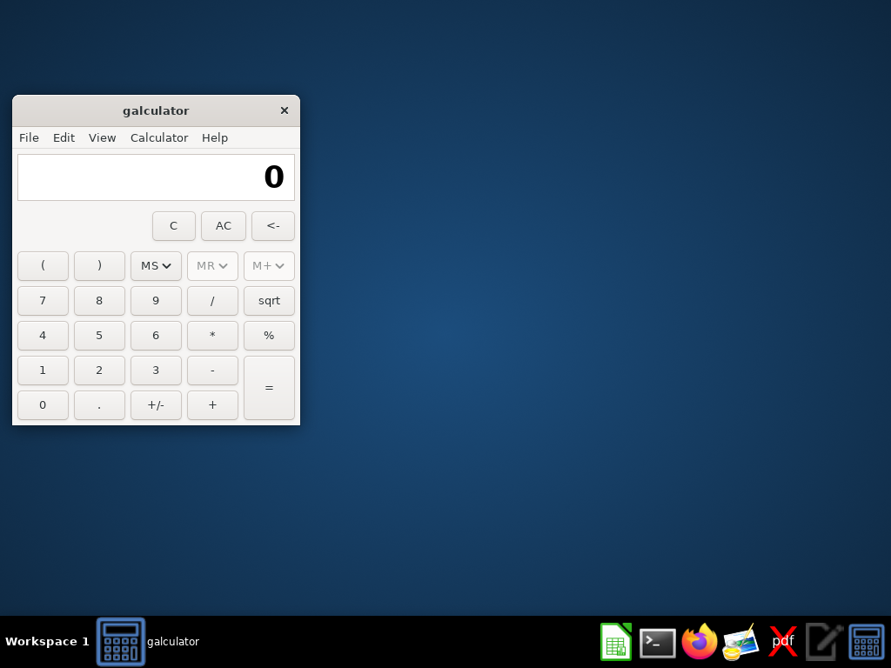
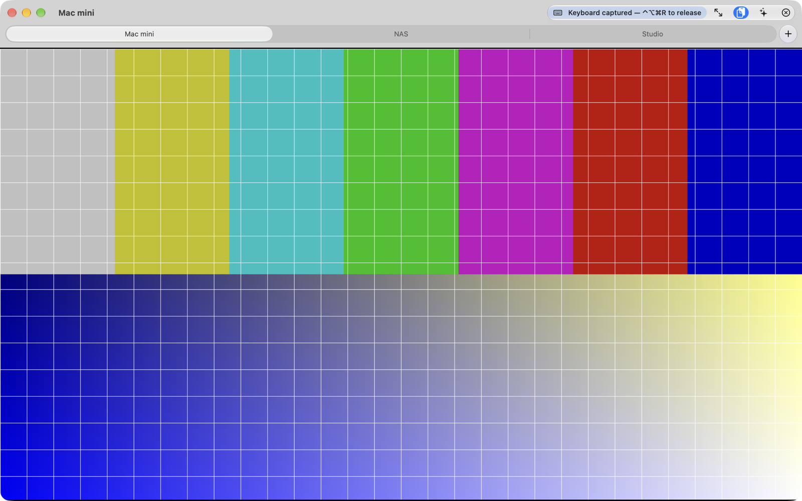
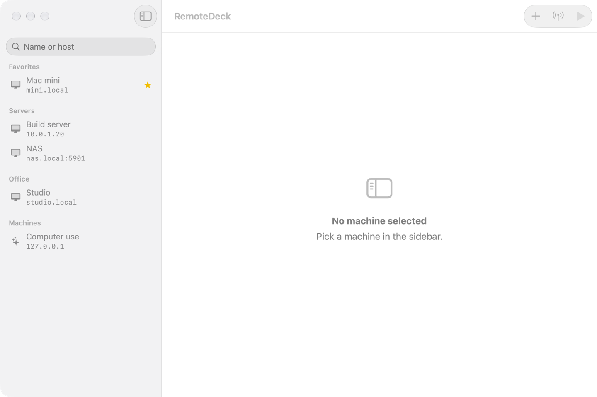
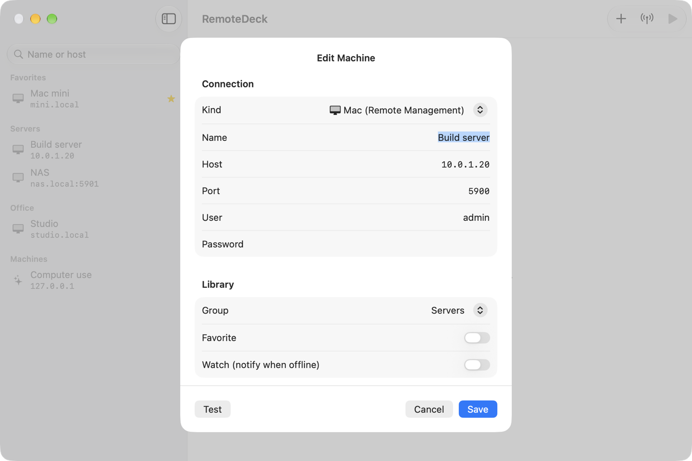
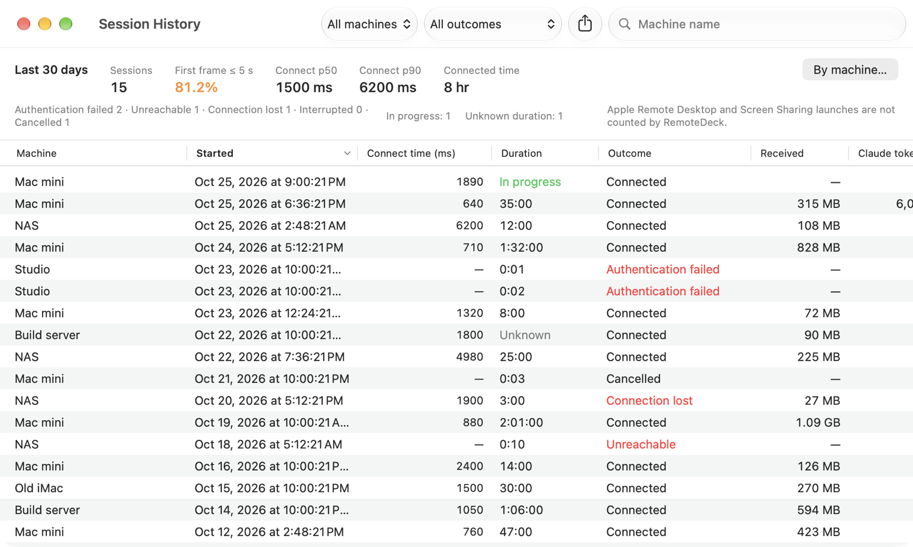
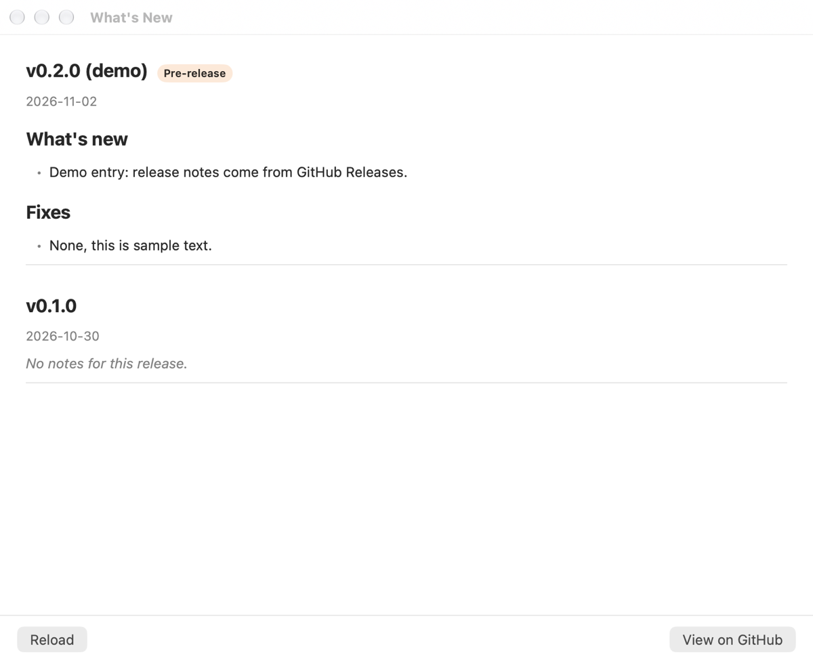

RemoteDeck opens screen sessions on your Macs (Apple Remote Desktop / Screen Sharing), on VNC desktops and on Anthropic computer use environments — from one Machine Library, in tabs, with your passwords in the Keychain.RemoteDeck ouvre des sessions d'écran sur vos Mac (Apple Remote Desktop / Partage d'écran), sur des bureaux VNC et sur les environnements Anthropic computer use — depuis une seule bibliothèque de machines, en onglets, avec vos mots de passe dans le Trousseau.

## features## fonctions
Everything you open Apple Remote Desktop or Screen Sharing for, without the fleet-management weight — plus the environments those apps can't reach.Tout ce pour quoi vous ouvrez Apple Remote Desktop ou le Partage d'écran, sans le poids de la gestion de parc — plus les environnements que ces apps n'atteignent pas.
All your machines in one sidebar: groups, favorites, search, and passwords kept in the Keychain only.Toutes vos machines dans une barre latérale : groupes, favoris, recherche, et mots de passe gardés dans le Trousseau uniquement.
Control a remote Mac with Apple Diffie-Hellman authentication, or any VNC desktop. Raw, CopyRect, ZRLE and Tight decoding, drawn with Metal.Pilotez un Mac distant avec l'authentification Apple Diffie-Hellman, ou n'importe quel bureau VNC. Décodage Raw, CopyRect, ZRLE et Tight, affiché avec Metal.
Several sessions as native tabs of one window, ⌘1…⌘9 to switch. Background tabs stay connected.Plusieurs sessions en onglets natifs d'une fenêtre, ⌘1…⌘9 pour passer de l'une à l'autre. Les onglets en arrière-plan restent connectés.
Find the Macs with Screen Sharing or Remote Management on your LAN without typing an address.Trouvez les Mac du réseau local qui ont le Partage d'écran ou la Gestion à distance, sans taper d'adresse.
Key combos go to the remote, ⌃⌥⌘R gives them back. With Accessibility access, ⌘Tab and ⌘Space go too.Les raccourcis partent vers la machine distante, ⌃⌥⌘R les rend. Avec l'accès Accessibilité, ⌘Tab et ⌘Espace aussi.
Ask Claude what is on the remote screen, or give it a task. With your own API key; every click or keystroke waits for your Confirm.Demandez à Claude ce qu'il y a à l'écran, ou confiez-lui une tâche. Avec votre propre clé d'API ; chaque clic ou frappe attend votre confirmation.
The same Machine Library on all your Macs, passwords through iCloud Keychain.La même bibliothèque sur tous vos Mac, les mots de passe via le Trousseau iCloud.
A notification when a watched machine goes offline or comes back; a local Session History with a 30-day summary and CSV export.Une notification quand une machine surveillée tombe ou revient ; un historique local des sessions avec un résumé sur 30 jours et un export CSV.
One automatic reconnect after a drop, a clean stop before sleep and a reconnect after wake. Sparkle keeps the app up to date.Une reconnexion automatique après une coupure, un arrêt propre avant la veille et une reconnexion au réveil. Sparkle tient l'app à jour.
// why it exists// pourquoi elle existe
Reaching a remote Mac meant juggling Apple Remote Desktop, heavy and built for fleets, and Screen Sharing, which has no library and no tabs; Claude computer use desktops needed yet another VNC client. RemoteDeck is the one fast, keyboard-friendly app for all of them, with its own RFB/VNC library written in Swift.Atteindre un Mac distant, c'était jongler entre Apple Remote Desktop, lourd et pensé pour les parcs, et le Partage d'écran, sans bibliothèque ni onglets ; les bureaux Claude computer use demandaient encore un autre client VNC. RemoteDeck est l'app rapide, pensée pour le clavier, qui couvre tout, avec sa propre bibliothèque RFB/VNC écrite en Swift.
screenshotscaptures





Window captures from the Debug build's demo mode: sample machines, a synthetic test pattern and sample release notes, no real host.Captures de fenêtres dans le mode démo du build Debug : machines d'exemple, mire synthétique et notes de version d'exemple, aucun hôte réel.
privacy & securityconfidentialité et sécurité
No account, no analytics, no tracker — on this page either. The app talks only to the places below.Pas de compte, pas de mesure d'audience, pas de traceur — sur cette page non plus. L'app ne parle qu'aux destinations ci-dessous.
get starteddémarrer
No App Store, no sign-in. Requires macOS 15 Sequoia or later.Pas d'App Store, pas de compte. Nécessite macOS 15 Sequoia ou ultérieur.
Once the first release is published, get the signed, notarized .dmg from GitHub Releases. Until then, build from source (README).Dès la première version publiée, récupérez le .dmg signé et notarié sur GitHub Releases. D'ici là, compilez depuis les sources (README).
Open it and drag RemoteDeck to Applications.Ouvrez-le et glissez RemoteDeck dans Applications.
Say yes to the Local Network prompt to discover and reach your Macs. Accessibility and notifications are optional.Acceptez la demande d'accès au réseau local pour découvrir et joindre vos Mac. Accessibilité et notifications sont facultatives.
ready?prêt ?
Free and open source. The first release is on its way.Gratuite et open source. La première version arrive.